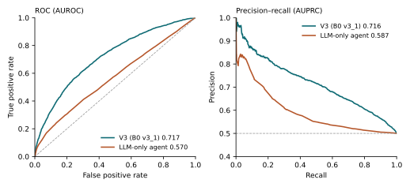

22T classification test: LLM-only agent vs DL predictor
On private mouse membrane PPIs that no LLM can have memorised, can an LLM agent with no PPI predictor classify held-out protein pairs as well as a deep-learning predictor?
1. Benchmark and protocol
22T mouse membrane PPI set, agent split: the 46,821 positives are split transductively 8:1:1 at random, and each split gets the same number of PRING negatives (both ends drawn from the positive-endpoint multiset, so every protein has the same degree in positives and negatives). Train has 74,912 labelled pairs among 3,161 proteins; validation 9,364 pairs; test 9,366 pairs (4,683 positive) among 2,154 proteins. 99.2% of test positives have both proteins in train positives, so most test proteins have labelled partners in train.
Because negatives are degree-preserving, the endpoint-propensity control (per protein, the log ratio of its train positives to train negatives, summed over both ends) is at chance. It measures how much a protein-frequency shortcut is worth on this split.
The LLM-only agent scores all 9,366 test pairs. Each batch of 200 pairs is one fresh LLM session. The agent sees the pair list, may make up to 80 tool calls (protein annotation, annotation search, knowledge-base homologs, and the labelled train pairs of a protein), and returns one probability per pair. The knowledge base is train only; it has no PPI predictor and no web access, and the prompt does not state the share of positives. 1,711 tool calls, 34.5M tokens; 1 pair has no prediction and scores 0.5.
V3 (B0 v3_1) is the ESM-3 pair classifier, trained on the same train pairs (seed 0); validation AUPRC selects epoch 17, and test is scored once.
2. Results
AUPRC (average precision) and AUROC use only the ranking; on a 1:1 test set chance is about 0.5.
Table 1. AUPRC and AUROC (higher is better) on the 22T agent split. Test: 4,683 positives + 4,683 negatives, same pairs for every row. Bold: best in each column.
| Model | Test AUPRC↑ | Test AUROC↑ |
|---|---|---|
| Endpoint-propensity control (degree only) | 0.514 | 0.518 |
| V3 (B0 v3_1), ESM-3 DL predictor | 0.716 | 0.717 |
| LLM-only agent (DeepSeek-V4 Pro) | 0.587 | 0.570 |
Table 2. Agent − V3 on the same 9,366 test pairs, with paired bootstrap 95% intervals (1,000 resamples). Negative values favour V3.
| Pairs | ΔAUROC | ΔAUPRC |
|---|---|---|
| All test pairs | -0.148 [-0.163, -0.134] | -0.129 [-0.144, -0.114] |
Table 3. Threshold metrics on the test set (higher is better, except ECE and Brier). p = 0.5 is the same threshold for both models (raw sigmoid for V3). The max-F1 row is an oracle threshold chosen on the test labels. ECE (15 bins) and Brier do not depend on the threshold. Bold: better at p = 0.5.
| Model | Threshold | Accuracy↑ | Precision↑ | Recall↑ | Specificity↑ | F1↑ | MCC↑ | ECE↓ | Brier↓ |
|---|---|---|---|---|---|---|---|---|---|
| V3 | 0.5 | 0.658 | 0.667 | 0.631 | 0.685 | 0.649 | 0.316 | 0.075 | 0.222 |
| LLM-only agent | 0.5 | 0.548 | 0.706 | 0.164 | 0.932 | 0.266 | 0.149 | — | — |
| LLM-only agent | 0.03 (max-F1) | 0.500 | 0.500 | 1.000 | 0.001 | 0.667 | 0.008 | 0.232 | 0.309 |

Reading
- V3 is better than the agent on the same pairs: ΔAUPRC -0.129, ΔAUROC -0.148, and neither interval includes 0 (Table 2).
- On this split, V3's signal is not a degree shortcut: the degree-only control is at 0.514 AUPRC, V3 at 0.716 (Table 1).
- The agent is a little above chance: AUPRC 0.587, AUROC 0.570 (Table 1). On public PRING, the same design scored AUPRC 0.815; that result agrees with the idea that the PRING score came from memorised public labels.
- When the agent calls a pair positive it is often right, but it seldom does: precision 0.706, recall 0.164 at p = 0.5; its best F1 (0.667) is the all-positive score, with MCC 0.008 (Table 3).
- The agent ranks pairs differently from V3: Spearman correlation 0.15 between their scores.
- V3 is well calibrated, the agent is not: ECE 0.075 vs 0.232 (Table 3).